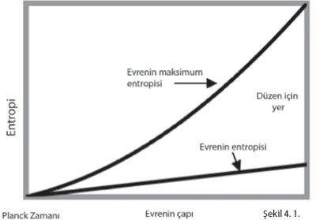

Maddenin yegane yasaları zihinlerimiz tarafından imal edilenlerdir ve zihnin yegâne yasaları onun için madde tarafından imal edilir.
— James Clerk Maxwell
MUCİZELER
Museviliğin, Hıristiyanlığın ve İslamın yaratıcı Tanrısına ilişkin delil arayışımızda Dünya'dan ayrılıp kozmosa bir bakalım. Modern bilimsel perspektiften bakıldığında, doğaüstü yaratılış hipotezinin deneysel ve teorik içerimleri nelerdir? Evrenin (1) bir kökeni/başlangıcı bulunduğuna ve (2) bu kökenin/başlangıcın doğal yoldan oluşamayacağına dair deliller aramamız gerekiyor. Evreni varlığa getirmek için bir mucizenin gerektiğine ilişkin doğrudan deneysel bir onay doğaüstü yaratılışın bir işareti olacaktır. Yani kozmolojik veriler, ya yerleşik doğa yasalarının bir veya daha fazla kez ihlal edildiğine ya da bu verileri betimlemek için geliştirilmiş modellerin tamamen doğal veya maddi terimlerle anlaşılamayan –ve muhtemelen hiç anlaşılamayacak– nedensel bir bileşen içerdiğine ilişkin bir delil sunmalıdır.
İmdi, filozof David Hume'un yüzyıllarca önce işaret ettiği gibi, mucize kavramının kendisi sorunludur. Olası üç tip mucizeden söz edilebilir: (1) Yerleşik doğa kanunlarını ihlal edenler, (2) açıklanamayan olaylar ve (3) çok düşük olasılıklı rastlantılar. Son ikisinde de genel geçer bilgiyle bir uzlaşmazlık söz konusu olduğundan aslında onlar da ilkine dahil edilebilirler.
Önceki bölümlerde insan zihninin doğaüstü güçlerinin varlığını onayabilecek gözlemlere örnekler vermiştim. Maddi yoldan açıklama beklentilerine meydan okuyan kozmik olayları kolayca tahayyül edebiliriz. Varsayalım ki güneş sisteminde birdenbire bir gezegen ortaya çıktı. Böylesi bir gözlem enerjinin korunumu yasasını ihlal edecek ve akla yatkın bir biçimde doğaüstü bir olay sınıfına sokulacaktır.
Bilim insanları herhangi bir sıradışı olayla karşılaştıklarında onu açıklayacak doğal bir mekanizma bulmak için ellerinden geleni yaparlar. Sıradan insanlar ise "bilim her şeyi bilemez" düşüncesine dayanarak doğaüstü bir mekanizmanın olabileceğine inanma eğilimi gösterirler.
Ancak bilim, çoğu insanın sandığından çok daha fazlasını bilmektedir. "Bilimsel devrimler" veya "paradigma değişimleri" söylemlerine rağmen bugünkü temel fizik özü itibarıyla Newton'un dönemindekiyle aynıdır. Elbette bu yasalar, özellikle yirminci yüzyıldaki görelilik ve kuantum mekaniği gelişmelerinden bu yana genişletilmiş ve yeniden gözden geçirilmiştir. Ama modern fiziğe aşina herkes belli temellerin, özellikle enerjinin ve ivmenin korunumu gibi büyük ilkelerin dört yüz yıldır değişmediğini kabul edecektir.[145] Korunum ilkeleri ve Newton'un hareket yasaları görelilik ve kuantum mekaniğinde de görülmektedirler. Newton'un yerçekimi yasası halen uzay araçlarının yörüngelerinin hesaplanmasında kullanılmaktadır.
Enerjinin korunumu ve diğer temel yasaların gözlemlenebilen en uzak galaksilerde ve kozmik mikrodalga arkaplanında varlıklarını sürdürmeleri, bu yasaların on üç milyar yıldan daha uzun süreden beri geçerli olduğunu göstermektedir. Bu yasalardan birinin önemsiz ölçüde kısa insan yaşamı süresince ihlal edildiğinin gözlemlenmesi elbette mucize sayılacaktır.
Teolog Richard Swinburne'e göre mucize, bir doğa yasasının tekrarlanamaz bir istisnası olarak tanımlanabilir.[146] Yasayı daima istisnayı içerecek şekilde yeniden tanımlamak mümkün olsa da bunun keyfi bir işlem olacağı açıktır. Yasalar, tekrarlanabilir olayları betimlerler. Öyleyse kendilerini hiçbir yasal örüntü içinde tekrarlamayan, iyi tesis edilmiş yasaların ihlallerine ilişkin deliller aramak durumundayız.
Hiç kuşku yok ki, Tanrı, eğer varsa, istediği mucizeyi istediği kadar tekrarlayabilme gücüne sahiptir. Ancak gizemli, tekrarlanmayan bir olay büyük olasılıkla gizemli kalmaya devam ederken, tekrarlanan olaylar sonunda doğal bir betimlemeye varabilecek daha çok bilgi sunarlar. Tanrı hipotezine, kuşkunun sağladığı tüm yararlardan istifade ederek şimdilik olumlu yaklaşalım ve açıklanamaz olaylarla olasılığı düşük rastlantıları bireysel temelde incelerken bunların mucize kökenli olabileceği ihtimalini açık bırakalım. Eğer mucizeyi en gevşek tanımıyla aldığımızda bile bunların hiçbiri gözlemlenmezse, o zaman bu durum bize mucizevi olayları yöneten bir Tanrı'nın varlığına karşı çıkmak için güçlü bir destek sağlayacaktır.
Şimdi ele alacağımız soru şudur: Kozmosa ilişkin gözlemlerimizde mucizevî bir yaratılışa dair deliller bulabilir miyiz?
MADDENİN YARATILMASI
Yirminci yüzyılın başlarına kadar, evrenin oluşumu için bir veya daha fazla mucizenin gerekli olduğuna dair güçlü belirtiler vardı. Şu anda evrende büyük miktarda madde bulunuyor ve madde kütle olarak tanımladığımız fiziksel büyüklükle karakterize ediliyor. Yirminci yüzyıldan önce maddenin ne yaratılabileceğine ne yok edilebileceğine, sadece bir türden başka bir türe dönüştürülebileceğine inanılıyordu. Bu nedenle maddenin varlığı, yaratılış anında bir kereliğine maddenin korunumu yasasının ihlalini gerektiren bir mucize gibi görünüyordu.
Ancak Albert Einstein, 1905'te yayımladığı özel görelilik teorisiyle maddenin enerjiden yaratılabileceğini ve enerjiye dönüşerek yok olabileceğini gösterdi. Bilim yazarlarının "Einstein'in ünlü denklemi" dediği E = mc2, bir cismin kütlesi m ile eşdeğer durağan hal enerjisi E'yi ilişkilendirir. Buradaki c ise evrensel bir sabit olan ışığın vakumdaki hızıdır. Bu eşitliğe göre durağan haldeki bir cisim enerji taşımaya devam eder.
Bir cisim hareket ettiğinde, kinetik enerji denilen ek bir hareket enerjisi taşır. Kimyasal ve nükleer etkileşimlerde kinetik enerji durağan enerjiye dönüştürülebilir ki bu kütle üretmeye eşdeğerdir.[147] Bunun tersi de gerçekleşir; kütle veya durağan hal enerjisi kinetik enerjiye dönüştürülebilir. Bu şekilde kimyasal ve nükleer etkileşimler kinetik enerji oluşturabilir ve bu enerji daha sonra motorları çalıştırmakta veya bir şeyleri havaya uçurmakta kullanılabilir.
Yani evrende kütlenin varlığı hiçbir doğa yasasını ihlal etmez. Kütle enerjiden gelebilir. Ama o zaman enerji nereden gelir? Aynı zamanda termodinamiğin birinci yasası olarak da bilinen enerjinin korunumu yasasına göre enerjinin bir yerlerden gelmesi gerekir. Prensip olarak yaratılış hipotezi, 13,7 milyar yıl önce büyük patlamanın başlangıcında enerji korunumunun ihlal edildiğine dair doğrudan gözlemle veya teorik gereklilikle doğrulanabilirdi.
Ama ne gözlemler ne de teori durumun böyle olduğuna işaret etmiyor. Birinci yasa, kapalı bir sistemde toplamı sabit kalmak koşuluyla enerjinin bir türden diğerine dönüşebilmesine izin veriyor. Dikkat çekici bir şekilde, evrenin toplam enerjisinin sıfır olduğu görülmektedir. Ünlü kozmolog Stephen Hawking'in 1988 tarihli Zamanın Kısa Tarihi adlı çoksatar kitabında dediği gibi, "Uzayda yaklaşık olarak tekdüze olan bir evren bulunması durumunda, negatif kütle çekim enerjisi ve madde ile temsil edilen pozitif enerjinin bir birlerini tamamen götürdükleri gösterilebilir. Yani evrenin toplam enerjisi sıfırdır."[148] Daha özgül olmak gerekirse, küçük ölçüm hataları içinde, evrenin ortalama enerji yoğunluğu tam da (ufak bir kuantum belirsizliği içinde) sıfır enerji konumundan oluşan bir evrende olması gerekene eşittir.[149]
Evrenin ilk saniyesinin çok ufak bir bölümünde üstel bir genişleme sürecinden geçtiğini söyleyen büyük patlama teorisinin modern uzantısı şişme teorisine göre, pozitif ve negatif enerjiler arasında yakın bir denge olması gerektiği öngörülüyor.[150] Şişme teorisi son zamanlarda, yanlış olduğunu ispatlayabilecek düzeyde zorlayıcı bazı gözlemsel testlere girdi. Şu ana kadar tüm testlerden başarıyla geçti.
Kısaca, evrendeki madde ve enerjinin varlığı, varsayılan yaratılış anında enerji korunumunun ihlal edilmesini gerektirmemektedir. Aslında veriler, bu tip bir mucizenin meydana gelmediği hipotezini kuvvetli şekilde desteklemektedir. Eğer bu tip bir mucizeyi, yaratıcı hipotezinin öngörüsü olarak kabul edersek, o zaman bu öngörünün onaylanmadığını söyleyebiliriz.
Ayrıca bu örnek, bilimin Tanrı hakkında söyleyecek hiçbir sözü olmadığı yönündeki savın bir kez daha çürütülmesine de yaramaktadır. Ölçüm sonuçlarımıza göre evrenin kütle yoğunluğunun, sıfır enerji konumundan başlayan bir evreninkiyle tam olarak eşit değerde olmadığını varsayın. Bu durumda, evrenin oluşması için bir mucizenin, yani enerjinin korunumu yasasının ihlal edilmesinin gerekli olduğu sonucuna varmak için makul, bilimsel nedenlerimiz olurdu. Her ne kadar bu, herkesi tatmin edecek düzeyde bir yaratıcının varlığını ispatlayacak olmasa da, kesinlikle yaratıcının varlığının lehine kuvvetli bir işaret olurdu.
DÜZENİN YARATILMASI
Yaratıcı hipotezinin bir başka öngörüsü daha elimizdeki veriler tarafından onaylanma konusunda başarısız oluyor. Eğer evren yaratılmış olsaydı, evrenin yaratılış anında yaratıcı tarafından verilmiş bir miktar düzene –Büyük Tasarımcı tarafından bu noktada devreye sokulan tasarıma– sahip olması gerekirdi. Bu beklenti genellikle termodinamiğin ikinci yasası uyarınca ifade edilir. Buna göre kapalı bir sistemin toplam entropisi veya düzensizliği zaman ilerledikçe ya sabit kalmalıdır ya da artmalıdır. Eğer evren bugün için kapalı bir sistemse, bu her zaman için böyle olamaz gibi görünüyordu. Düzenin evrene geçmişte bir noktada dışarından verilmiş olması gerekirdi.
1929 öncesinde bu, mucizevî bir yaratılış için güçlü bir argümandı. Fakat bu yılda astronom Edwin Hubble galaksilerin yaklaşık olarak birbirlerinden uzaklıklarıyla orantılı bir hızlarda birbirlerinden uzaklaştıklarını duyurdu. Bu gözlem evrenin genişlediğine işaret ediyordu. Bu büyük patlama için ilk delili sağladı. Bizim amaçlarımız açısından önemli olan nokta şudur: Genişleyen bir evren tamamen kaos içinde başlayıp, ikinci yasayla tutarlı yerelleşmiş düzen oluşturabilir.
Bunu görmenin en basit yollarından biri "ev işi" örneğidir. Evinizi her temizlediğinizde topladığınız pisliği pencerenizden bahçeye attığınızı düşünün. En sonunda bahçeniz çöple dolacaktır. Fakat uygun bir tedbir alarak bu işi sürdürebilirsiniz. Sadece evinizin etrafında yeni alanlar satın alarak çöpleri atacak daha fazla alana sahip olabilirsiniz. Böylece evrenin geri kalanında düzensizliği artırmak pahasına evinizde yerelleşmiş düzen oluşturabilirsiniz.
Benzer şekilde, evrenin belli bölümleri, düzenleme süreci sırasında üretilen çöp veya entropinin (bunu düzenlenen sistemden çıkarılan düzensizlik olarak düşünün) devamlı genişleyen ve o bölgeyi çevreleyen alana saçılmasıyla daha düzenli hale gelebilir. Şekil 4.1'de gösterildiği gibi, evrenin toplam entropisi ikinci yasanın gerektirdiği şekilde, evren genişledikçe artar.[151] Ancak evrenin sahip olabileceği maksimum entropi daha da hızlı artarak düzenin oluşabilmesi için daha fazla boş alan oluşmasını sağlar. Bunun nedeni belli bir yarıçapı olan bir kürenin (evreni bir küre gibi düşünüyoruz) maksimum entropisinin aynı yarıçaptaki bir karadeliğin entropisine eşit olmasıdır. Genişleyen evren bir karadelik olmadığına göre entropisi maksimum entropiden daha düşüktür. Dolayısıyla, zaman ilerledikçe bütünde daha düzensiz hale gelse de, genişleyen evrenimiz maksimal düzensizlikte değildir. Ama bir zamanlar öyleydi.

Şekil 4.1. Evrenin toplam entropisi ve evrenin çapının bir fonksiyonu olarak maksimum entropi... Başlangıçta, Planck zamanında, eşit olmaları evrenin tam kaostan başladığını gösterir. Ancak evren genleştiğinden, maksimum entropinin toplam entropiden daha hızla artmasının yarattığı fark termodinamiğin ikinci yasası ihlal edilmeden düzenin oluşmasını mümkün kılar.
Genişlemeyi 13,7 milyar yıl önceye, tanımlanabilir en erken âna, Planck zamanı olan 6.4 x 10-44 saniyeye geri çektiğimizi düşünelim. Burada evren işlemsel olarak tanımlanabilir mümkün en küçük hacme sahiptir, yarıçapı Planck uzunluğu (1.6 x 10-35 metre) olan bir küre, yani Planck küresi. Termodinamiğin ikinci yasasından bekleneceği gibi, evren o anda şimdikinden düşük entropiye sahip olacaktır. Ancak o entropi bu küçüklükte bir nesnenin sahip olabileceği en büyük değer kadar yüksekti; çünkü Planck boyutlarındaki bir küre bir karadeliğe eşittir.
Bu daha detaylı açıklama gerektiriyor. Evrenin başlangıcındaki entropisinin maksimal olduğunu ve o andan itibaren devamlı olarak arttığını söylüyor gibi görünüyorum. Aslında tam da söylediğim bu. Evrenin başlangıcındaki entropisi o büyüklükte bir nesnenin sahip olabileceği maksimal değer kadar yüksekti çünkü evren içinden hiçbir bilginin çıkarılamayacağı bir karadeliğe eşdeğerdi. Bugün için entropi daha yüksek ama maksimal değil; yani evrenin boyutlarındaki bir cismin sahip olabileceği kadar yüksek değil. Evren artık bir karadelik değil.
Burada bu açıklamayı yaptığımda bana itiraz eden fizikçilere de yanıt vermem gerekiyor. Onlar haklı olarak şu anda elimizde Planck zamanından önceki fiziği betimlemek için kullanabileceğimiz bir kuantum kütle çekim teorisinin bulunmadığına işaret ediyorlar. Ben Einstein'ın zaman saat kadranınızda gördüğünüzdür şeklindeki işlemsel zaman tanımı benimsedim. Planck zamanından daha kısa bir zaman aralığını ölçmek için bu ölçümü Planck uzunluğundan daha küçük bir bölgede yapmak gerekir. Bu da, Planck zamanının ışık hızıyla çarpımına eşittir. Kuantum mekaniğinin ilkelerinden biri olan Heisenberg kesinsizlik ilkesine göre böyle bir bölge, içinden hiçbir bilginin çıkarılamayacağı bir karadelik olacaktır. Bu da Planck zamanından daha küçük bir zaman aralığının tanımlanamayacağı anlamına gelir.[152]
Şimdiki zamanı düşünün. Plank zamanından daha kısa zaman aralıklarına uygulamaya kalkışmadığımız sürece yerleşik fiziği "şimdi"ye ve az önce ve sonrasına uygulamakta hiçbir tereddütümüz yoktur. Esas olarak zaman, tanımı gereği, bir birimin Planck zamanına eşit olduğu birimlerin toplam sayısı olarak sayılır. Matematiksel fiziğimizde zamanı, cebirde yaptığımız gibi, sürekli bir değişken sayabiliriz çünkü birimler pratikte ölçtüğümüz herhangi bir şeye göre çok küçüktür. Esas olarak denklemlerimizi, içinde zamanın ölçülemez, dolayısıyla tanımlanamaz olduğu Planck aralıkları vasıtasıyla dışdeğerleyebiliriz. Bunu "şimdi"de yapabiliyorsak, büyük patlamanın başlangıcını betimlememize başlamamız gereken yerde, en erken Planck aralığının sonunda da yapabiliriz.
Ekstrapolasyonla sonraki zamanlardan evrenin bu ilk anlarına gittiğimizde entropinin maksimal olduğunu görüyoruz. Bu durumda tam bir düzensizlik vardı; hiçbir yapı mevcut olamazdı. Bundan çıkan sonuca göre evren hiçbir yapıyla başlamadı. Bugün ise entropisinin artık maksimal olmadığı olgusuyla tutarlı bir yapıya sahiptir.
Kısaca, bugün için en iyi kozmolojik anlayışımıza göre evrenimiz tasarlanmış (veya başka türlü) hiçbir yapı veya organizasyonla başlamamıştır. Evrenin başlangıcı bir kaos durumuydu.
Bu durumda şu sonuca ulaşmak zorundayız: Şimdi gözlemlediğimiz karmaşık düzen sözde yaratılış anında evrene dışarıdan yerleştirilmiş bir ilk tasarımın sonucu olamaz. Evren, büyük patlama öncesinde olanlarla ilgili hiçbir kayıt barındırmamaktadır. Yaratıcı, eğer var olduysa bile, hiçbir iz bırakmadı. Bu nedenle aslında hiç var olmamış da olabilir.
Bir kez daha elimizde, başka türlü çıkabilecek ve bu durumda bir yaratıcı için kuvvetli bir bilimsel delil oluşturacak bir sonuç var. Evren genişlemeseydi ve Kutsal Kitap'ta tarif edildiği gibi bir "gökkubbe" olsaydı, termodinamiğin ikinci yasasına göre evrenin geçmişteki entropisinin izin verilen maksimum değerinden düşük olması gerekecekti. Bu durumda eğer evrenin bir başlangıcı varsa, bu başlangıç mutlaka dışardan empoze edilmiş bir yüksek düzen olacaktı. Evren sonsuz geçmişe uzansaydı bile, bu yönde devamlı artan düzeninin kaynağı doğal betimlemeye karşı çıkacaktı.
BAŞLANGIÇ VE NEDEN
Büyük patlamanın deneysel gerçekliği bazı teistlerin bunun kendi başına bir yaratıcının varlığını kanıtladığını iddia etmelerine neden oldu. 1951'de Papa XII. Pius Papalık Akademisi'nde şöyle dedi: "Yaratılış zaman içinde gerçekleşti, bu nedenle bir Yaratıcı vardır ve bu yüzden de Tanrı vardır."[153] Büyük patlama fikrini ilk öneren astronom/rahip Georges-Henri Lemaître, papaya bu açıklamasının "mutlak" olmaması şeklinde bilgece bir tavsiyede bulundu.
Hıristiyan apolojist William Lane Craig, evrenin bir başlangıcı olması gerektiğini ve bu başlangıcın da kişisel bir yaratıcıya işaret ettiğini kanıtladığını iddia ettiği bir dizi sofistike argüman ileri sürmüştür.[154] Bunlardan biri, 1916'da Einstein tarafından yayınlanmış ve o zamandan itibaren birçok zorlu deneysel testten geçmiş modern kütle çekim teorisi genel göreliliğine dayanmaktadır.[155]
1970 yılında kozmolog Stephen Hawking ve matematikçi Roger Penrose, daha önce Penrose tarafından türetilmiş bir teoremi kullanarak büyük patlamanın başlangıcında bir tekilliğin var olduğunu"ispatladılar."[156] Genel görelilik ekstrapolasyonla sıfır zamanına doğru geri çekildiğinde evrenin yoğunluğu ve kütle çekimsel alan devamlı artar. Evrenin büyüklüğü sıfıra doğru giderken yoğunluk ve kütle çekimsel alan, en azından genel göreliliğin matematiğine göre, sonsuza gider. Craig, bu noktada zamanın durması gerektiğini ve böylece bu andan daha önceki bir zamanın var olamayacağını iddia eder.
Ancak Hawking daha sonra kendi ispatını reddetti. Çoksatar kitabı Zamanın Kısa Tarihi'nde, "Evrenin başlangıcında gerçekte bir tekillik yoktu," demiştir.[157] Penrose'un da hemfikir olduğu bu düzeltilmiş sonuç, Einstein'ın görelilik teorilerinin ortaya çıkmasından sonraki yıllarda geliştirilmiş olan atomik süreçler teorisine, yani kuantum mekaniğine dayanmaktadır. Bugün büyük hassasiyetle doğrulanmış olan kuantum mekaniği bize genel göreliliğin, en azından bugünkü formülasyonuyla, daha önce bahsettiğimiz Planck zamanından kısa süreler ve Planck uzunluğundan kısa mesafeler için geçersiz kalacağını söylemektedir. Buradan çıkan sonuç şudur: Genel görelilik, Planck zamanından önce bir tekillik olduğunu göstermek için kullanılamaz ve Craig'in zamanın bir başlangıcı olduğunu göstermek için tekillik teoremini kullanması geçersizdir.
Craig ve diğer teistler bununla ilgili başka bir iddiada daha bulunuyorlar: "Evrenin bir noktada mutlaka bir başlangıcı olmalıdır, çünkü eğer evren sonsuz yaşta olsaydı bugüne ulaşması için sonsuz zamandan geçmiş olması gerekirdi." Ancak filozof Keith Parsons'ın işaret ettiği gibi, "Evrenin sonsuz yaşında olduğunu söylemek başlangıcı olmadığını söylemek demektir– sonsuz zaman önce bir başlangıca sahip olduğunu değil."[158]
Sonsuzluk, on dokuzuncu yüzyıl sonlarında matematikçi Georg Cantor'un çalışmalarında kesin şekilde formüle edilmiş soyut bir matematiksel kavramdır. Fakat sonsuzluk simgesi "∞" fizikte "çok büyük bir sayı" için kısaltma olarak kullanılır. Fizik, saymaktır. Fizikte zaman, basitçe bir saatin tiktaklarının sayımıdır. İleriye doğru sayabildiğiniz gibi geriye doğru da sayabilirsiniz. İleriye doğru sayarak çok büyük bir pozitif sayıya ulaşabilirsiniz ama asla matematiksel olarak pozitif sonsuz sayıya ulaşamazsınız ve zaman "hiçbir zaman sona ermez." Geriye doğru sayarak çok büyük bir negatif sayıya ulaşabilirsiniz ama asla matematiksel olarak negatif sonsuz sayıya ulaşamazsınız ve zaman "hiçbir zaman başlamaz." Pozitif sonsuza ulaşamadığımız gibi negatif sonsuza da ulaşamayız. Evren gelecekte matematiksel olarak sonsuz sayıda olaya sahip olmasa da yine de onun bir sonunun olması gerekli değildir. Benzer şekilde evren geçmişte matematiksel olarak sonsuz sayıda olaya sahip olmasa da, yine de onun bir başlangıcının olması gerekli değildir. Her zaman için bir olayı takip eden bir başka olay ve bir olaydan önce gelen başka bir olay olabilir.
Craig, evrenin bir başlangıcı olduğunun gösterilmesinin kişisel bir yaratıcının varlığını kanıtlamak için yeterli olduğunu savunmaktadır. Bu iddiasını İslam teolojisinden çıkardığı kelam kozmolojik argümanı tarzında sunmaktadır.[159]
1. Var olmaya başlayan her şeyin bir nedeni vardır.
2. Evren var olmaya başlamıştır.
3. Öyleyse evrenin bir nedeni vardır.
Filozoflar kelam argümanına mantıksal temelde şiddetle karşı çıkmışlardır, ama burada bilim üzerine odaklandığımız için bunları tekrarlamaya gerek yok.[160]
Craig yazılarında ilk öncülü ortak, gündelik deneyim dışında gerekçe gerektirmeyen kendiliğinden açık bir gerçek olarak anlatmaktadır. Bu bize dünyanın düz olduğunu söyleyen deneyim biçimidir. Aslında, atom ve atom-altı seviyede belli nedenleri olmayan fiziksel olaylar gözlemlenmiştir. Örneğin, uyarılmış enerji seviyesindeki bir atom daha düşük bir seviyeye indiğinde foton (yani bir ışık parçacığı) yayar. Bu olayın bir nedeni bulunamamıştır. Benzer şekilde, radyoaktif bir çekirdeğin bozunması için de belli bir neden yoktur.
Craig buna karşı, kuantum olaylarının önceden belirlenmemiş şekilde olsa da "nedeninin" bulunduğunu iddia eder. Bunu da "olasılıksal nedensellik" olarak adlandırır. Burada aslında Craig, ilk öncülündeki "nedenin" tesadüfi, kendiliğinden – önceden belirlenmemiş bir şey olabileceğini kabullenmiş oluyor. Olasılıksal nedenselliğe izin vererek önceden belirlenmiş yaratılış için yaptığı savunmayı da yıkmış oluyor.
Olasılıksal nedenler konusunda oldukça başarılı bir teorimiz var: kuantum mekaniği. Bu teori belirli bir olayın ne zaman gerçekleşeceğini öngörmez. Aslında tek tek olayların önceden belirlenmemiş olduklarını varsayar. Buna tek istisna David Bohm'un kuantum mekaniği yorumunda ortaya çıkar.[161] Bu yorumda henüz saptanmamış kuantum-altı kuvvetlerin var olduğu kabul edilir. Bu yorumun bazı destekçileri olsa da, o genel olarak kabul edilmez çünkü bu özel görelilik ilkelerine ihlal eden ışık hızı üstü bağlantılara gerek duymaktadır.[162] Daha da önemlisi, kuantum-altı kuvvetlere dair hiçbir delil bulunamamıştır.
Kuantum mekaniği, bireysel olayları öngörmek yerine benzer olaylar bütününün sonuçlarının istatistiksel dağılımını öngörmek için kullanılır. Bunu yüksek hassasiyetle yapabilir. Örneğin, bir kuantum hesaplaması size verili bir zaman sonunda büyük bir örnek parçada kaç tane çekirdeğin bozulacağını söyleyecektir. Ya da bir uyarılmış atomlar grubunun yayacağı ışığın yoğunluğunu öngörebilirsiniz –ki bu yayılan fotonların toplam sayısının bir ölçüsüdür. Ama ne kuantum mekaniği ne de var olan başka bir teori (Bohm'unki de dahil olmak üzere) bireysel bir çekirdeğin veya atomun davranışıyla ilgili bir şey söyleyebilir. Atomik geçişlerde yayılan fotonların kendiliğinden varlığa gelmesi gibi nükleer ışımalarda da parçacıklar kendiliğinden yayılırlar. Bu olaylar önden belirlenmeden ortaya çıktıkları için Craig'in ilk öncülüyle çelişirler.
Radyoaktivite olayında bozunmanın bir üstel bozunum "yasasına" uyduğu gözlemlenmektedir. Ancak bu istatistiksel yasa tam da belli bir kısa zaman aralığındaki bozunum olasılığıyla aynı uzunluktaki tüm zaman aralıklarındaki bozunum olasılığının eşit olması durumunda bekleyeceğimiz bir şeydir. Başka bir deyişle, bu bozunum eğrisinin kendisi, her bir bireysel olayın öngörülemez biçimde oluştuğunun, yani önceden belirlenmiş olmadığının delilidir.
Kuantum mekaniği ve klasik (Newtoncu) mekanik genel olarak düşünüldüğü kadar birbirinden ayrı ve bağımsız değildir. Aslında kütle, mesafe ve hız gibi sistem parametreleri klasik rejime yaklaştığında kuantum mekaniği yumuşak bir şekilde klasik mekaniğe dönüşür.[163] Bu olduğunda kuantum olasılıkları ya sıfıra ya da yüzde yüze gelir ki bu da bize bu seviyede kesinlik sağlar. Ancak olasılıkların sıfır veya yüzde yüz olmadığı birçok örnek mevcuttur. Kuantum olasılık hesapları, benzer olaylardan oluşan gruplar üzerinde yapılan gözlemlerle tam olarak uyuşmaktadır.
Şunu da kaydetmek gerekir: Kelam argümanının sonucu sağlam olsaydı, yani evrenin bir nedeni olsaydı bile, bu neden niçin doğal olamasın? Bu durumda, kelam argümanı evrenin bir başlangıcı olduğuna dair ikinci öncülü gündeme getirmeye gerek bile kalmadan hem deneysel hem teorik olarak başarısızlığa uğramış olur.
KÖKEN
Bununla birlikte kelam argümanına bir başka darbe de ikinci öncülün de başarısız olduğu gerçeğiyle gelmektedir. Yukarıda gördüğümüz gibi, evrenin büyük patlamayla başladığı iddiasının günümüz fizik ve kozmoloji bilgisinde hiçbir temeli yoktur.
Büyük patlamayı onaylayan gözlemler, öncesinde bir evrenin bulunmuş olduğu olasılığını dışlamaz. Evrenimizin daha önce var olan başka bir evrenden, örneğin, kuantum tünellemesi veya kuantum dalgalanması denen bir süreçle ortaya çıktığını ileri süren modeller yayınlanmıştır.[164] Evrenin ilk anlarını betimleyen kozmoloji denklemleri zaman ekseninin diğer tarafına da uygulanabilmektedir. Dolayısıyla evrenin büyük patlamayla başladığını varsaymamız için hiçbir neden yoktur.
The Comprehensible Cosmos [Kavranabilir Kozmos] adlı çalışmamda üniversite seviyesinde matematik veya fizik bilen herkesin kolayca anlayacağı bir matematik kullanarak evrenin tümüyle doğal kökenli oluşuna ilişkin bir senaryo ortaya koydum.[165] Bu senaryo James Hartle ve Stephen Hawking'in sınırsız evren modeline dayanıyordu.[166] Bu modelde evrenin uzay ve zamanda başlangıcı veya sonu yoktur. Sunduğum senaryoda evrenimiz, önceki tüm zamanda var olmuş başka bir evrenden Planck zamanındaki kaos içinden tünellenmiş olarak tarif ediliyordu.
Zamanın Kısa Tarihi'nde teknik detaylardan kaçınmış olsa da sınırsız evren modeli Hawking'in sıkça alıntılanan şu sözlerinin temelidir: "Evrenin bir başlangıcı olduğu sürece bir yaratıcısı olduğunu varsayabiliriz. Ama eğer evren gerçekten tamamen kendi kendine yetiyorsa, sınırlara veya kenarlara sahip değilse, ne başlangıcı ne de sonu olur; sadece basitçe var olur. O zaman bir yaratıcıya ne gerek var?"[167]
Önde gelen saygın fizikçi ve kozmologlar saygın bilim dergilerinde evrenin "hiçlikten" doğal olarak ortaya çıkabileceğini öne süren senaryolar yayınladılar.[168] Bugün için bunların hiçbirinin evrenin ortaya çıkışını tam temsil ettiği "ispatlanamıyor." Ama bunlar, elimizdeki bilgiler ışığında makul mekanizmalar sunulabildiği için, bilimsel bilgideki bu boşluğu temel alan Tanrı'nın varlığına ilişkin argümanların başarısızlığını göstermeye yarıyorlar.
Daha önce vurguladığım gibi, güncel bilimsel bilgideki bir boşluk için makul bir bilimsel açıklama varsa, boşlukların Tanrısı argümanı başarısız olur. Evrenin kesin kökeni konusunun güncel bilimsel bilgide bir boşluk olarak kaldığına itirazım yok. Ama bu kökene ilişkin kavranılabilir herhangi bir bilimsel açıklamadan mahrum olduğumuz görüşünü reddediyorum.
Kısaca, deneysel veriler ve bu verileri başarıyla betimleyen teoriler, evrenin maksatlı bir yaratılışın eseri olmadığına işaret etmektedir. En iyi güncel bilgilerimize dayanarak, maksatlı bir yaratılışa dair kozmolojik bir iz bırakmış bir yaratıcının var olmadığını söyleyebiliriz.
KOZMOSA MÜDAHALE ETMEK
Bu evreni herhangi bir mucize gerektirmeyecek ve geride maksatının izini bırakmadan yaratmış bir tanrının var olma ihtimalini hâlâ açık bırakır. Elbette bu tanrı, izlerinin her yerde olduğu kabul edilen Museviliğin, Hıristiyanlığın ve İslamın Tanrısı değildir. Ama bu dinler belki teolojilerinde küçük bir düzeltme yapabilir ve yaratılış planları Planck zamanındaki kaos tarafından silinmiş olsa da Planck zamanından sonra devreye girerek evrenin hâlâ maksatlı yaratılışına uygun olmasını sağlayan bir tanrı önerebilirler.
Bu durumda da bu tanrının evrenin tarihine müdahale ettiği yerlere dair bazı delilleri yerleşik teoriler veya gözlemlerle bulmayı bekleyebiliriz. Önceki bölümlerde bu tür delilleri Dünya'da, yaşam ve zihin olaylarında aramıştık. Şimdi Dünya'nın dışında uzanan engin uzaya bakacağız.
Tarih bize başlangıçta mucize olarak görülen beklenmedik gök olaylarına ilişkin birçok örnek sunar. MÖ 585 yılında Anadolu'da meydana gelen tam güneş tutulması Medlerle Lidyalılar arasındaki savaşı durdurmuş, iki taraf da dehşet içinde kaçmıştır. Bu muhtemelen bilinen ilk bilimsel öngörü örneğidir; Miletoslu Thales, bu tutulmayı Babil kayıtlarına dayanarak öngörmüştür.
Tutulmalar ender gerçekleşen olaylardır; onlar olağan insan deneyiminin Güneş ve Ay'ın doğup batmaları kadar düzenli parçaları değildir. Bununla birlikte tutulmalar da bu iki daha alışıldık olay gibi bir yasaya göre olurlar ve tekrarlanırlar. Bugün Thales'in öngördüğü tutulmanın tam tarihini (28 Mayıs MÖ 585) tam da bu yüzden bilebiliyoruz. Bu bilimin geleceği öngörme ve geçmişi bilebilme gücünün kanıtıdır. Yaklaşık aynı dönemde, II. Nebukadnezar Kudüs'ü yıkıp Judealıları kendi yaratılış mitlerini alacakları Babil'e sürmüştür. Buda'nın da aydınlanmaya neredeyse tam bu tarihte erdiği söylenir. Konfüçyüs ise birkaç on yıl sonra doğacaktır.
Başka bir muhteşem astronomik olay örneği de eski çağda doğaüstü felaket habercileri olarak kabul edilen kuyruklu yıldızlardır. Bilim daha sonra bu olayı tamamıyla doğal terimlerle, yani tamamen mekanik modellerle betimlemiştir. On yedinci yüzyılda Edmund Halley (ö. 1742) dostu Isaac Newton'un (ö. 1727) geliştirdiği mekanik teorileri kullanarak 1682'de görülen bir kuyruklu yıldızın 1759'da tekrar görüleceğini öngörmüştür. Ve söz konusu kuyruklu yıldız, Halley'in ölümünden sonra, öngördüğü tarihte görülmüştür ve o zamandan beri her yetmiş altı yılda bir geçişini yapmaktadır. Görüş alanımızın çok dışına taşan geniş yörüngelerinden dolayı çoğu kuyrukluyıldız beklenmedik şekilde ortaya çıkar. Ancak kayıtlar, Halley kuyrukluyıldızının tarih boyunca belki yirmi dokuz defa geçtiğini göstermektedir.
Daha yakın dönemlerde, aralarında pulsarların, kuasarların, süpernovaların ve gamma ışın patlamalarının da bulunduğu beklenmedik ve hemen anlaşılamayan başka astronomik olaylar gerçekleşti. Ama, diğer örneklerdeki gibi, bu olaylar da uzayda veya zamanda şu ya da bu şekilde tekrarlandı. Bu sayede sonunda doğalarını tamamen fiziksel açıdan öğrenebildik.
Şu ana kadar gökte, enerji düzensizliğini aşan, bir yer veya bir zamanda tekrarlanmayan ve yerleşik doğa biliminin terimleriyle açıklanamayan herhangi bir olayla karşılaşmadık. Modele açıklanması için doğaüstü bir öğenin eklenmesini gerektirecek gözlemlenebilir bir astronomi olayına da henüz rastlamadık. Aslında, elimizde Swinburne'ün mucize olma ölçütünü karşılayan tek bir kozmik olay bile yok. Evrende mucizevi olayların üretilmesinde yeterince etkin rol üstlenen bir Tanrı şu ana kadar, elimizdeki en güçlü astronomik aletlere görünmedi. Kozmoloji gözlemleri, tam da Tanrı olmadığı takdirde nasıl görünmeleri bekleniyorsa öyle görünüyorlar.
FİZİK YASALARI NEREDEN GELİYOR?
Evrenin kökeninin ve işleyişinin fizik yasalarının ihlalini gerektirmediğini gördük. Bu durum minberden veya medyadan başka türlüsünü dinlemiş sıradan inançlılara şaşırtıcı gelebilir. Ancak bilimsel kavrayışa sahip inananlar bu noktayı sırf argümanın uğruna doğru farz ettikten sonra "Tamam da," diyeceklerdir, "o zaman fizik yasaları nereden geliyor?" Genel kanı bu yasaların evrenin dışında bir yerden geldikleri yönündedir. Ama bu, kanıtlanabilir bir olgu değildir. Fizik yasalarının evrenin kendi içinden gelmemesi için hiçbir neden yoktur.
Fizikçiler gözlemlerini açıklamak için matematiksel modeller kurar. Bu modeller birtakım genel ilkeler içerirler; bunların tıpkı sivil yasaların devletleri yönettiği gibi evreni yöneten kurallar olduğuna inanılır. Bu yüzden de bunlara geleneksel olarak "yasa" denir. Ancak bir önceki çalışmam The Comprehensible Cosmos'ta gösterdiğim gibi, en temel fizik yasaları maddenin davranışına getirilen kısıtlamalardan ziyade fizikçilerin bu davranışları betimleme yollarına getirilen kısıtlamalardır.[169]
Kaydettiğimiz herhangi bir doğa ilkesinin nesnel ve evrensel olabilmesi için onun herhangi belli bir gözlemcinin bakış açısına bağlı olmayacak şekilde formüle edilmesi gerekir. İlkenin tüm bakış açıları için ve her "referans çerçevesinden" doğru olması gerekir. Bu yüzden hiçbir nesnel yasa, yeğlenen bir gözlemci tarafından belirlenen zamanda özel bir âna veya uzayda özel bir konuma bağlı olamaz.
Diyelim ki tüm nesnelerin doğal olarak bana doğru hareket ettiğini söyleyen bir yasa formüle edeceğim. Bu hiç de nesnel bir tavır olmazdı. Ama insanların bir zamanlar düşündüğü tam da buydu – Dünya evrenin merkeziydi ve cisimlerin doğal hareketi ona doğruydu. Bunun yanlışlığını gösteren Copernicus devrimi bilim insanlarının yasalarının bir referans çerçevesine bağlı olmaması gerektiğini aşamalı olarak anlamaları yolundaki ilk adımdı.
1918'de matematikçi Emmy Noether en önemli fizik yasalarının –enerjinin, çizgisel momentumun ve açısal momentumun korunumu yasalarının– zamanda özel bir anı, uzayda özel bir konumu ve yönü seçmeyen her modelde otomatik olarak ortaya çıkacağını ispatladı.[170] Daha sonra Einstein'ın özel görelik teorisinin dört boyutlu uzay-zamanda herhangi bir özel yön seçmezsek ortaya çıktığı anlaşıldı.
Uzay-zamanın bu özelliklerine simetriler adı verilir. Örneğin bir kürenin dönme simetrisi uzayda belli bir yönü ayırmamasının bir sonucudur. Yukarıda betimlenen dört uzay-zaman simetrisi maddesiz evrenin, yani boşluğun doğal simetrileridir. Bu simetriler tam da evren maddenin olmadığı bir ilk durumdan, yani hiçlikten ortaya çıksaydı nasıl olmaları gerekirse öyledirler.
Elektrik yükünün korunumu ve çeşitli kuvvet yasaları gibi diğer fizik yasaları uzay-zaman simetrilerinin fizikçilerin matematik modellerinde kullandığı soyut uzaylara genellenmesinden doğmuştur. Bu genellemeye, benim daha betimleyici biçimde bakış açısı değişmezliği dediğim ilkeye benzer şekilde ayar değişmezliği adı verilir.
Bu modellerin (Kavranılabilir Kozmos'ta verdiğim) matematiksel formülasyonları, eğer nesnel ve evrensel olacaklarsa bu gerekliliği karşılamalıdırlar. Şaşırtıcı olan bu yerine getirildiğinde bildik fizik yasalarının çoğunun doğallıkla ortaya çıkmasıdır. Doğrudan aşikar olmayanların da ikinci bölümde bahsettiğimiz kendiliğinden simetri kırılması olarak bilinen süreçle akla yatkın bir şekilde ortaya çıktığı görülebilir.
Öyleyse, nereden geldi bu fizik yasaları? Hiçlikten! Bunların çoğu evrenin kendiliğinden içinden doğduğu boşluğun simetrilerine dayanılarak insanlar tarafından oluşturulmuş önermelerdir. On Emir gibi gökten verilmemişlerdir; aksine tam da herhangi bir yerden verilmedikleri takdirde nasıl görüneceklerse öyle görünmektedirler. Ve tam da bu yüzden, örneğin büyük patlamanın başında bir enerji korunumu ihlal edilmiş olsaydı bu dışsal bir yaratıcının varlığının delili sayılabilirdi. Fizikçiler kendileri "icat" etmiş olsalar da bu "yasayı" öylesine değiştiremezler. Bu bir mucize olurdu, ya da daha açık söylersek, enerji korunumuna yol açan zaman simetrisini kırmak üzere devreye giren dışsal bir faili gerektirirdi. Ama gördüğümüz gibi veriler böylesi bir mucizeyi gerektirmemektedir.
Böylece korunum yasalarını Planck zamanındaki büyük patlamanın başlangıcına uygulamamız haklı gerekçelere dayanmaktadır. O zamanda, bu bölümde gördüğümüz gibi, evrenin hiçbir yapısı yoktu. Bu da onun ayırt edilebilir hiçbir yere, yöne veya zamana sahip olmadığı anlamına gelir. Böyle bir durumda korunum yasaları geçerlidir.
Bu kesinlikle genel anlamda anlaşılmış bir bakış değildir. Normal olarak biz fizik yasalarının evrenin yapısının parçası olduğunu düşünürüz. Ama ben burada üç büyük korunum yasasının hiçbir yapının parçası olmadığını öne sürüyorum. Onlar tam da en erken andaki yapı yokluğundan çıkarlar.
Hiç kuşkusuz bunu kavramak kolay değil. İyi tesis edilmiş ve konvansiyonel bilimi kullandığımı ısrarla belirtmeme karşın, bu konudaki görüşlerim fizikçiler arasında genel kabul görmüş değil. Oysa ben yeni bir fizik veya kozmoloji önermiyorum; sadece bu alanlarda tesis edilmiş bilginin, şimdiye dek pek az fizikçinin kafa yorduğu, fizik yasalarının kökeni sorusuyla ilgisi üzerine bir yorum öneriyorum.
Sıklıkla yanlış anlaşılan bir başka noktayı da vurgulamalıyım. Ben fizik yasalarının, postmodernizm adı verilen hareketle ilişkilendirilen yazarlar gibi, biz ne istersek o olduklarını ya da sadece birer "kültürel anlatı" olduklarını söylemiyorum.[171] Fizik yasaları verilerle uyumlu oldukları için ne iseler odurlar.
Fizik yasalarının kökeni üzerine açıklamamı ister kabul edin ister etmeyin en azından benim bilimsel bilgideki bir boşluğa– fizik yasalarının kökeni olduğuna dair görüş birliği bulunan bir boşluğa– ilişkin akla yatkın doğal bir senaryo sunduğumu teslim edeceğinizi umuyorum. Bir kez daha, bu senaryoyu ispat yükü bana düşmez. Ama (1) benim açıklamamın yanlış olduğunu, (2) başka hiçbir doğal açıklamanın mümkün olmadığını ve (3) yasaları Tanrı'nın koyduğunu ispat yükü Tanrı'nın fizik kanunlarının kaynağı olduğunu ileri süren inananlara düşer.
NEDEN HİÇBİR ŞEY DEğİL DE BİR ŞEY VAR?
Eğer fizik yasaları boş uzay-zamandan doğal olarak çıkıyorsa, o zaman bu boş uzay-zaman nereden geliyor? Neden hiçbir şey değil de bir şey var? Bu soru genellikle Tanrı'nın varlığını fizik ve kozmolojiden hareketle savunmaya çalışan ve diğer tüm argümanlarının başarısız olduğunu gören teistlerin başvurdukları son sığınaktır. Filozof Bede Rundle buna "Felsefenin en merkezi ve en kafa karıştırıcı sorusu" demektedir. Onun basit (ama kitap uzunluğundaki) yanıtı şudur: "Bir şey olmalı."[172]
Birçok kavramsal problemin bu soruyla ilintisi açıktır. "Hiçlik"i nasıl tanımlarız? Özellikleri nelerdir? Eğer özellikleri varsa "bir şey" olmaz mı? Teistlere göre yanıt Tanrı'dır. Ama o zaman neden hiçbir şey değil de Tanrı var? "Hiçlik"i tanımlayabildiğimizi varsayarsak, niçin bir şey değil de hiçbir şey daha doğal bir hal olsun? Aslında, şu andaki en iyi fizik ve kozmoloji bilgilerimize dayanarak "bir şey"in "hiçbir şey"den daha doğal olduğuna dair akla yatkın bir bilimsel neden sunabiliriz.
İkinci bölümde doğanın öz-örgütlenme süreci vasıtasıyla nasıl karmaşık yapılar inşa edebildiğini, basitliğin nasıl karmaşıklığı doğurduğunu gördük. Kar tanesini, su buharının atmosferde doğrudan donmasının sonucu ortaya çıkan altı uçlu güzelim buz kristalleri örüntüsünü ele alalım. Deneyimlerimiz bize kar tanesinin çok kısa ömürlü olduğunu, eriyerek çok daha az yapıya sahip su damlacıklarına dönüştüğünü söyler. Ama bunun tek nedeni bizim sıcağın kristallerin kırılgan düzenlenişini daha basit olan sıvıya indirgediği görece sıcak bir ortamda yaşamamızdır. Kar tanesinin simetrisini kırmak için enerji gerekir.
Ortamsal sıcaklığın buzun erime noktasının çok altında olduğu bir çevrede, evrenin yıldız ısıtmasının son derece yerel olan etkilerinden uzak çoğu yerinde olduğu gibi, su buharı hızla karmaşık, asimetrik yapılar halinde kristalleşecektir. Kar taneleri ebedi olacaktır ya da en azından kozmik ışınlar parçalayana kadar bütünlüklerini koruyacaklardır.
Bu örnek birçok basit parçacık sisteminin istikrarsız olduğunu, yani, daha düşük enerjili daha karmaşık yapılara kendiliğinden faz geçişleri yapmaları yüzünden sınırlı yaşam süreleri olduğunu gösteriyor. "Hiçlik" olabildiğince basit olduğuna göre ondan da öyle çok istikrarlı olmasını bekleyemeyiz. Onun da madde içeren bir evren gibi daha karmaşık bir şeye kendiliğinden faz geçişi yapacağını makul bir kesinlikle söyleyebiliriz. Hiçbir şeyden bir şeye geçiş, bir faili gerektirmeyen doğal bir geçiştir. Nobel ödüllü fizikçi Frank Wilczek'in de belirttiği gibi: "Öyleyse kadim ‘Neden hiçbir şey değil de bir şey var?' sorusuna verilecek yanıt, ‘hiçlik'in istikrarsız olmasıdır."[173]
Evrenin doğal kökenine ilişkin daha önce bahsettiğim sınırsızlık senaryosu içinde hiçbir şey yerine bir şeyin olma olasılığını hesaplamak mümkündür; bu olasılık yüzde altmışın üstündedir.[174]
Kısacası, hiçbir şeyden ziyade bir şeyin olması doğal durumdur. Boş bir evren doğaüstü müdahaleyi gerektirir –dolu bir evren değil. Hiçlik durumunun sürmesini sadece Tanrı gibi evrenin dışından bir failin sürekli eylemi sağlayabilir. Bir şeylerin olduğu gerçeği tam da Tanrı yoksa beklenebilecek şeydir.